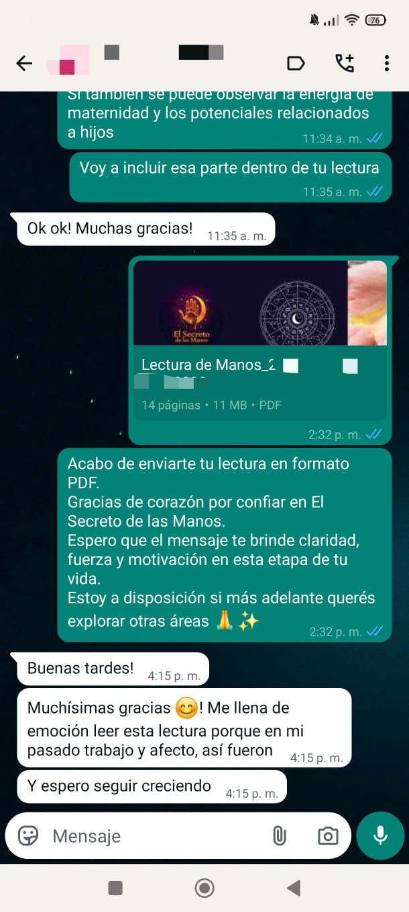
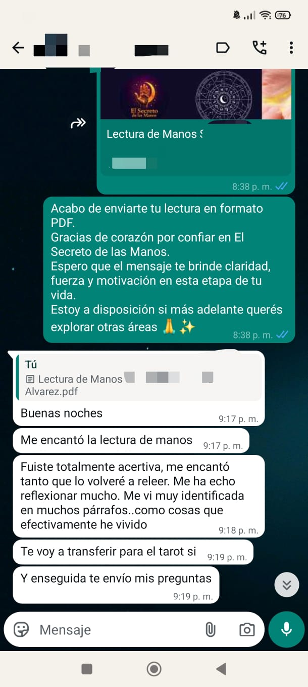
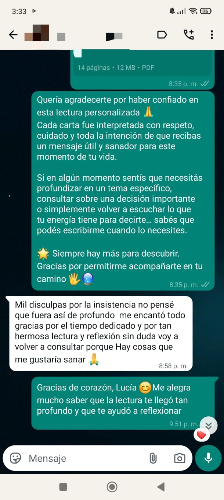
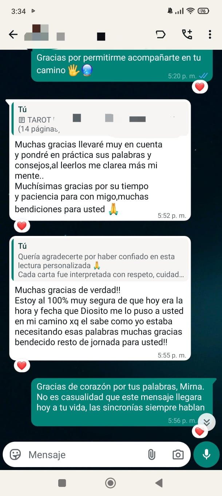
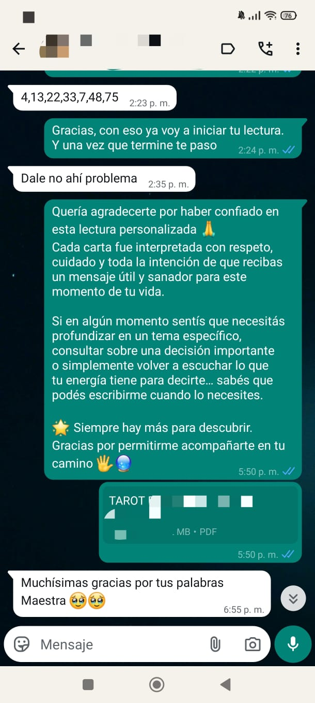
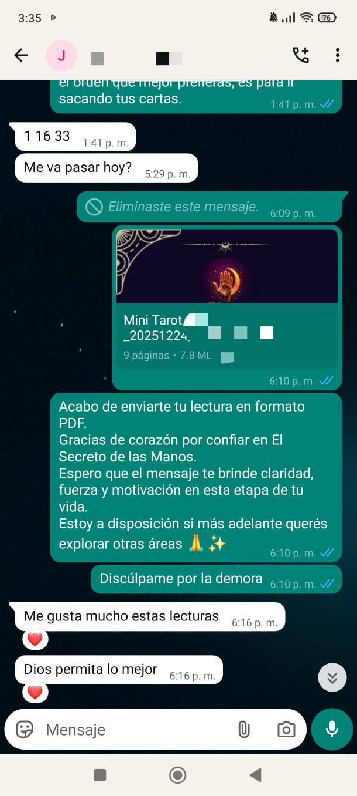
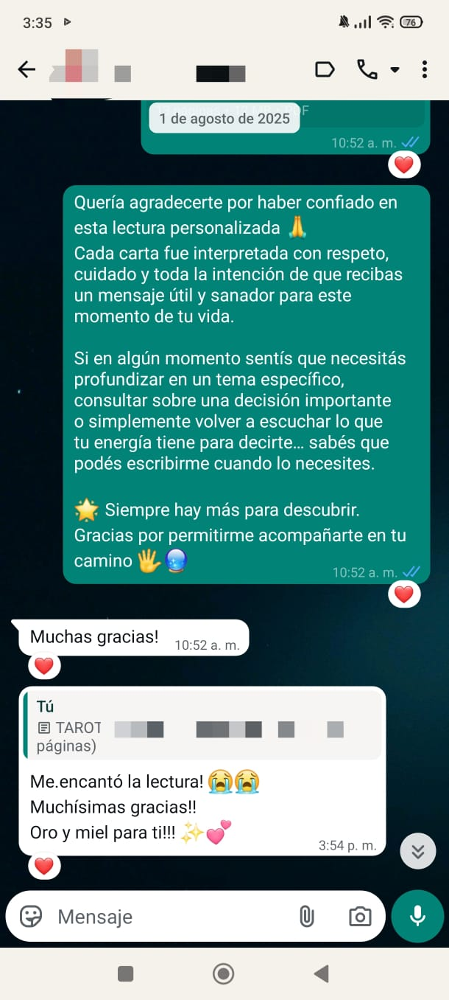
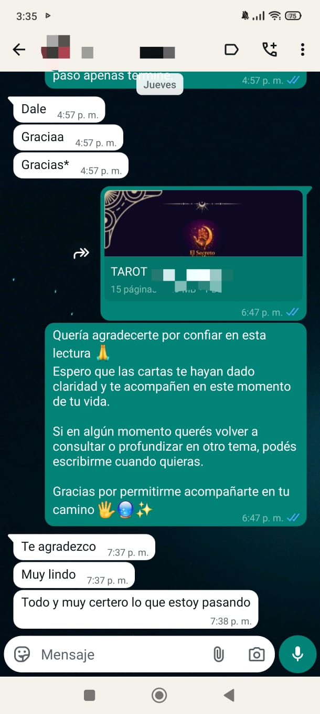

La claridad que buscás
ya está en vos.
5 preguntas. Un diagnóstico personalizado. Descubrí si es Tarot o Lectura de Manos lo que necesitás ahora — y recibilo por WhatsApp.
Sin registrarte · Sin videollamada · 2 minutos · Gratis
Lecturas personalizadas por Bianca · desde Gs. 80.000
Leyendo tus respuestas…
Esta oferta ya no está disponible, pero podés escribirnos y coordinamos tu lectura.
Al tocar el botón se abre WhatsApp · Coordinamos la reserva y el pago ahí · No se cobra nada automáticamente
Simple, personal, a tu ritmo
4 pasos · Por WhatsApp · Sin videollamadas
Hacés el diagnóstico
5 preguntas que revelan qué tipo de guía necesitás ahora mismo. Sin registrarte, sin datos.
Reservás por WhatsApp
Un mensaje directo. Coordinamos el horario que mejor te quede. Sin formularios complicados.
Recibís tu lectura
Por audio o mensaje de texto, en WhatsApp. Podés escucharla o leerla cuando quieras, las veces que quieras.
Integrás a tu tiempo
La lectura queda guardada. Podés volver a ella cuando necesites recordar lo que resonó.
Lo que nos escriben después de cada lectura
Mensajes reales de clientes por WhatsApp
Conversaciones reales de clientes








Dos caminos. Una misma intención.
Cada lectura accede a una capa diferente de lo que estás viviendo.
— Elegí una carta y descubrí qué energía quiere hablarte hoy —
Respirá profundo. Dejá que tu intuición elija.
El espejo de lo que está en movimiento
El Tarot no predice: ilumina. Cada carta refleja una energía presente en tu situación, ayudándote a ver desde afuera lo que desde adentro no podés nombrar.
- Ideal para situaciones concretas, decisiones, y encrucijadas
- Claridad sobre dinámicas relacionales, laborales o personales
- Una perspectiva externa que te devuelve el centro
Precio accesible · Coordinás el pago por WhatsApp
Línea del corazón
Habla de tu forma de amar y abrirte emocionalmente.
Línea de la cabeza
Refleja tu mente y cómo procesás lo que vivís.
Línea de la vida
Fuerza vital, cambios y etapas importantes.
El mapa que traés desde el nacimiento
Las líneas de la palma no dicen lo que va a pasar. Revelan cómo procesás la vida: tus patrones emocionales, tu forma de tomar decisiones, tu vínculo con el cuerpo y el tiempo.
- Patrones de carácter, emoción y pensamiento
- Cómo te relacionás con el cambio, el amor y la energía
- Una lectura que no caduca — es sobre quién sos, no solo qué estás viviendo
Precio accesible · Coordinás el pago por WhatsApp
No es adivinación.
Es autoconocimiento
con una brújula.
Las lecturas no te dicen qué va a pasar. Te devuelven una perspectiva que ya estaba en vos, pero que el ruido cotidiano apagó.
-
Sin predicciones vacías ni frases genéricas
Cada lectura responde a vos, no a un guión preparado.
-
Cada lectura es personal, no un molde
Tu situación es única. El resultado también.
-
El objetivo es que puedas decidir con más claridad
No te decimos qué hacer. Te devolvemos el foco.
-
Confidencialidad total y un espacio sin juicio
Lo que compartís en tu lectura, queda en tu lectura.
Lo que suelen preguntar
No. Las lecturas trabajan con simbolismo e interpretación, no con fe. Muchas personas llegan con escepticismo y se van con reflexiones que les resultan útiles. La apertura ayuda, pero no es un requisito.
Enviás fotos claras de ambas manos (palma abierta, buena luz). A partir de esas imágenes se realiza la lectura completa y te la enviamos por WhatsApp en audio o texto, según prefieras.
En general, tu lectura se entrega dentro de 2 a 3 horas. Si hay pedidos antes que el tuyo, puede demorar un poco más, pero siempre se entrega en el mismo día.
Sí. Muchas personas combinan ambas porque acceden a capas distintas: el Tarot ilumina la situación presente, la lectura de manos revela el patrón estructural. Se complementan muy bien.
Podés escribirnos y charlamos. El diagnóstico es una orientación, no una sentencia. Si sentís que el otro tipo de lectura resuena más contigo, lo tenemos en cuenta al preparar tu sesión.
No. La lectura de manos no predice eventos ni fechas. Se centra en patrones de carácter, formas de procesar la emoción y rasgos de personalidad. No hacemos pronósticos de ese tipo bajo ninguna circunstancia.
Cada lectura tiene un precio accesible diseñado para que la decisión sea fácil. Para conocer el precio actual de la Lectura de Tarot o de Manos, escribinos directamente por WhatsApp — te respondemos rápido y coordinamos todo en el mismo mensaje.
Tu lectura te está esperando.
Un mensaje en WhatsApp es todo lo que hace falta. Sin formularios, sin esperas.
Sin videollamada · Sin registro · A tu ritmo